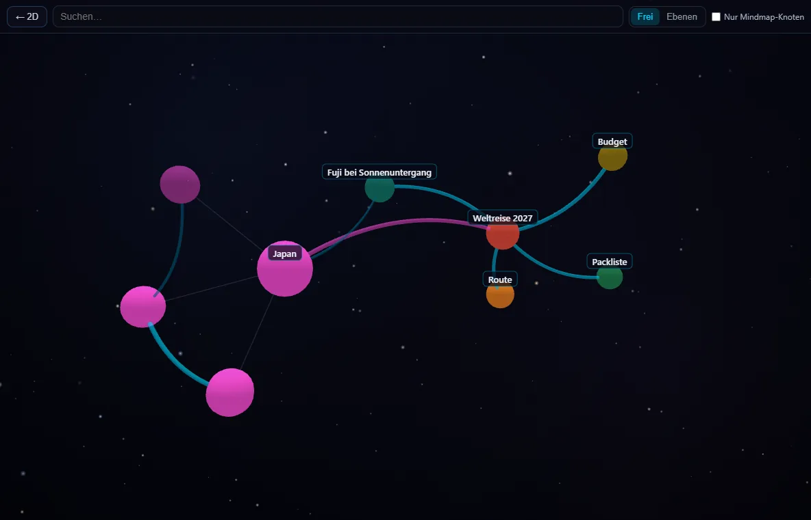
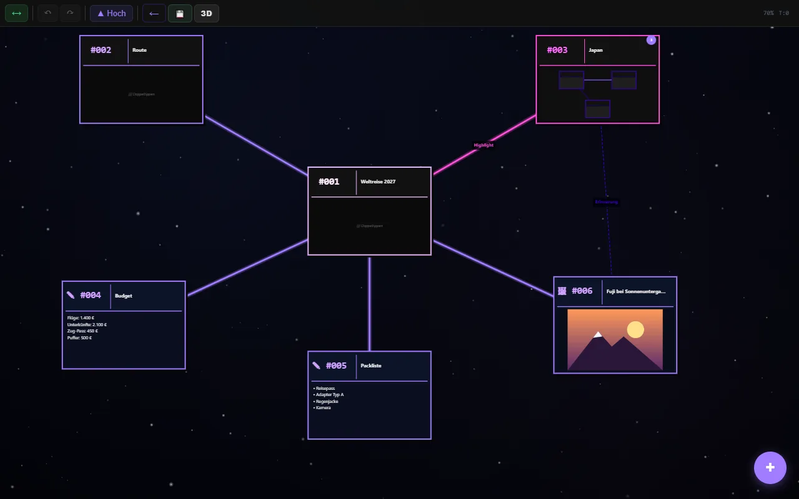
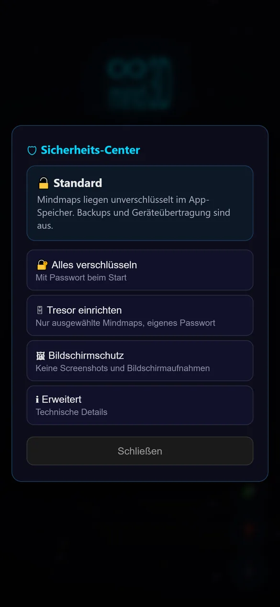

Included plugins
Plugins add new views, colours and tools to mind3D. Five are already included. You switch them on and off on the start screen under 🧩, without restarting.
The whole mind map as a space
In the mind map, the 3D button appears at the top. It shows all levels at once as a space of spheres and threads. Areas with many child nodes are larger, the colours come from your mind map.
- Rotate, zoom and pan with your finger or the mouse
- Search: the view flies to the node it finds
- Tap a node and “Open in 2D” jumps right there
- Two layouts: Free (groups by main branches) or Levels (depth = distance from the centre)
- “Mindmap nodes only” filter for the rough overview
- The back key or Esc closes the 3D view
Settings: layout when opening, FPS display

mind3D in your colour
Changes the accent colour of the whole app: buttons, logo, nodes and connections. The picture shows the same mind map in violet.
- Ten ready-made colours: cyan, blue, violet, magenta, red, orange, gold, green, turquoise, white
- Your own colour as a hex value, e.g. #ff7a59
- Gradient of two colours, also in the logo
- The colour changes instantly, without restarting

Mind maps become projects
For everyone who plans with mind3D. The plugin adds a Projects tab to the project list. You can turn any mind map into a project there.
- Overview: open and completed tasks at a glance
- Work breakdown structure: sub-projects and work packages from your mind map
- To-do list with “Up next” and an area for completed tasks
- Project mind maps are marked in the list
Garden planning
This is what a project looks like as a mind map. Everything stays understandable even without the plugin:
- Raised beds (sub-project)
- Irrigation (work package)
- 📋 To-do: open tasks
- ✅ Done: completed tasks
Bring in notes and Obsidian vaults
New import options appear in the “New project” dialog. Your existing notes become a mind map.
One note (.md)
Headings become levels, paragraphs and list items become nodes, tasks (☐/☑) are kept as a task list. A note without headings becomes a single text node.
Whole vault
As a .zip, on PC also directly as a folder. Folders become levels, notes become nodes, [[wikilinks]] become connections. Embedded images come along.
Colours by tag
Notes can be coloured by their first tag. You can set your own colour per tag.
The import does not change your original files. Importing again creates a new project, e.g. “My vault (1)”.

All protection features in one place
Switched on from the start and shown as 🛡 on the start screen. Nothing changes unless you act.
- Encrypt everything or set up a vault with its own password
- 24 recovery words as a spare key
- Change password, set automatic locking
- App lock with fingerprint and screen protection
The encryption itself is part of the app’s core. If you switch the plugin off, everything stays encrypted and readable; only the switches disappear.
In detail on the Security page →Your own plugins
🧩Install
Start screen → 🧩 → “Install plugin from file” and choose the .js file. Installing the same file again updates the plugin.
Important: an installed plugin can read and change your mind maps. Only install plugins whose source you trust.
🛠Build your own
Plugins are single JavaScript files. They can change colours and background, add node types and buttons, create their own tabs and import formats, and read and write mind maps, always through the app’s normal saving logic.
Plugins cannot reach the internet: the app blocks every outside connection.
Guide and API